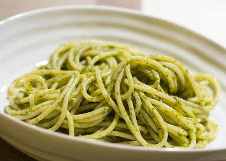

SPAGHTETTI

Description
This recipe will guide you through the process of cooking a simple dish of spaghetti with pesto sauce.
It is very simple to make and also delicious, which makes it an incredible meal to cook when you don't have much time.
Ingredients
- 1/2 cup of chopped onion
- 2 half tablespoons of pesto
- 2 tablespoons of olive oil
- 2 tablespoons of grated Parmesan cheese
- 1 package of pasta
- Salt to taste
- Ground black pepper to taste
Steps
- Cook pasta in a large pot of boiling water until done and then drain
- Meanwhile, heat the oil in a frying pan over medium to low heat
- Add pesto, onion, salt and pepper
- Cook about five minutes or until onions are soft
- In a large bowl, mix pesto mixture into pasta and stir in grated cheese
- Enjoy!